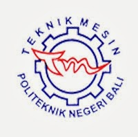

|
POLITEKNIK NEGERI BALITerdepan, Profesional, dan Berdaya Saing Internasional |
| Home | Tentang Kami | Jurusan | Kontak |
|
 Jurusan Teknik Mesin Visi : Menjadi jurusan yang menghasilkan sumber daya manusia profesional, kompetitif dan berwawasan internasional di bidang Teknik Mesin dan Teknologi Berkelanjutan Misi :
Program Studi D3 Teknik Mesin: Profil Lulusan hasil disesuaikan dengan dasar hukum pengembangan kurikulum Pendidikan Tinggi yang berbasis KKNI dengan jenjang kualifikasi 5. Penetapan profil lulusan difokuskan pada pemenuhan kebutuhan industri dan sasaran profesi dan/atau tempat kerja yang akan didapat atau dilakukan mahasiswa setelah menamatkan perkuliahan. Adapun kualifikasi pekerjaan lulusan yang dapat diraih dengan level jabatan teknisi atau analis pada bidang keahlian Perawatan-Perbaikan Otomotif dan Mesin Industri sebagai berikut :
Program Studi D3 Teknik Pendingin dan Tata Udara : Profil lulusan berdasarkan kebutuhan industri terkini dan pengembangan kurikulum Pendidikan Tinggi yang berbasis KKNI dengan jenjang kualifikasi 5 menetapan profil lulusan difokuskan pada pemenuhan kebutuhan industri dan sasaran profesi dan/atau tempat kerja yang akan didapat atau dilakukan mahasiswa setelah menamatkan perkuliahan yakni 4 kualifikasi pekerjaan lulusan dengan level jabatan teknisi atau analis pada bidang pendingin dan tata udara serta perawatan dan perbaikan utilitas gedung/hotel sebagai berikut:
|
|
| Copyright IanRizky | 2015 |